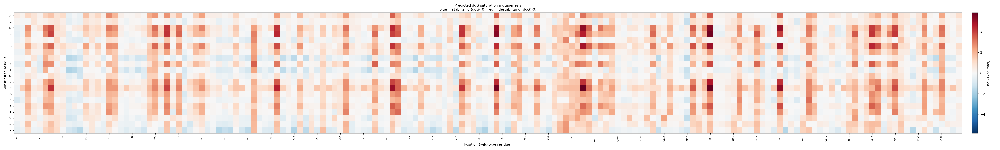

Blue = stabilizing (ΔΔG<0), red = destabilizing (ΔΔG>0). Convention: ΔΔG > 0 destabilizes the fold.
| Mutation | Predicted ΔΔG (kcal/mol) | Call |
|---|---|---|
| D10L | -1.797 | STABILIZING |
| A49Y | -1.758 | STABILIZING |
| A82Y | -1.752 | STABILIZING |
| D70L | -1.705 | STABILIZING |
| D10I | -1.657 | STABILIZING |
| A134Y | -1.649 | STABILIZING |
| S36Y | -1.645 | STABILIZING |
| G12Y | -1.629 | STABILIZING |
| G156Y | -1.624 | STABILIZING |
| E11L | -1.603 | STABILIZING |
| A112I | -1.592 | STABILIZING |
| D70I | -1.586 | STABILIZING |
| S117I | -1.555 | STABILIZING |
| A49I | -1.550 | STABILIZING |
| A41Y | -1.547 | STABILIZING |
A RF regressor (chosen by grouped, protein-disjoint cross-validation) over 68 interpretable biophysical features: amino-acid property deltas (hydrophobicity, volume, charge, flexibility, polarity, helix/sheet propensity, side-chain H-bond capacity), BLOSUM62 and Grantham distance, substitution-type flags, local-window composition, and — when a PDB is supplied — relative solvent accessibility, secondary structure, Cβ/Cα contact number, burial depth, backbone H-bond count, plus engineered structure×chemistry interactions (e.g. cavity creation in the buried core).
Trained on FireProtDB curated experimental ΔΔG values (protein-disjoint train/val/test splits via the ThermoMPNN benchmark), with light antisymmetric reverse-mutation augmentation. Evaluated on the full independent S669 benchmark and on Ssym for forward/reverse antisymmetry.
| Feature | Importance |
|---|---|
| rel_sasa | 0.107 |
| pos_frac | 0.077 |
| d_sheet_prop | 0.070 |
| buried_x_d_volume | 0.066 |
| win_hydro_mean | 0.063 |
| win_helix_mean | 0.056 |
| d_polarity | 0.040 |
| d_flex | 0.039 |
| buried_x_abs_d_hydro | 0.036 |
| d_volume | 0.030 |
MNIFEMLRIDEGLRLKIYKDTEGYYTIGIGHLLTKSPSLNAAKSELDKAIGRNCNGVITKDEAEKLFNQDVDAAVRGILRNAKLKPVYDSLDAVRRCALINMVFQMGETGVAGFTNSLRMLQQKRWDEAAVNLAKSRWYNQTPNRAKRVITTFRTGTWDAYKNL